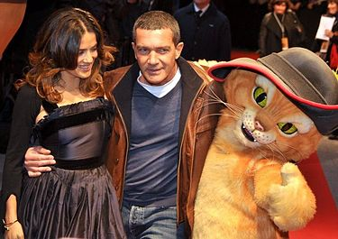
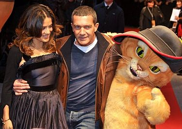

Кот прибывает в неизвестный город, постоянно скрываясь от правосудия, которое ждёт его в родном городе Сан-Рикардо, где за него назначена награда. Кот приходит в бар выпить молочка, где терпит насмешки и колкости бандитов, но те успокаиваются, когда он даёт им понять, что не так прост. Испуганные люди начинают предлагать Коту места, где бы он мог украсть хорошенькую сумму — например, церковь или приют для детей. Но Кот никогда не грабит церкви и сирот, поэтому больше всего его заинтересовало предложение украсть волшебные бобы у супругов-бандитов Джека и Джилл — ведь если посадить эти бобы, то стебель из них вырастет до неба, где грозный великан охраняет величайшее сокровище — золотоносную гусыню. Кот полжизни искал эти бобы, и поначалу решил, что над ним просто подшучивают, но потом всё-таки соглашается их выкрасть.
Роли озвучивали
 
